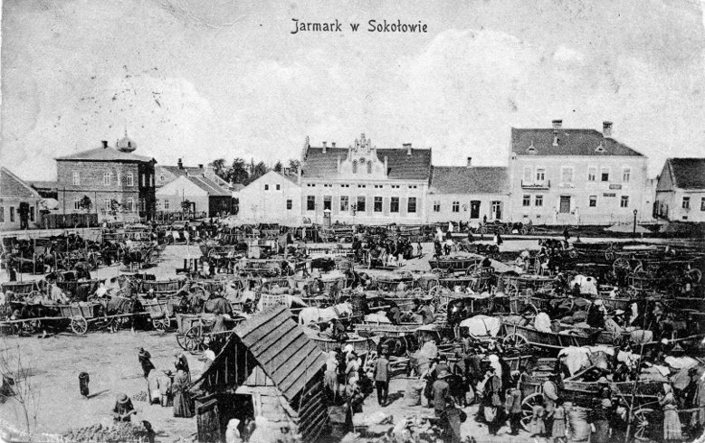

Troche Historii
Sokołów Małopolski to miasto w woj. podkarpackim, w powiecie rzeszowskim, siedziba gminy miejsko-wiejskiej Sokołów Małopolski. Sokołów Małopolski leży na skrzyżowaniu odwiecznych szlaków handlowych: "krakowskiego" z Tarnowa przez Krzeszów i "Madziarskiego" z Sandomierza przez Rzeszów i Duklę na Węgry. Usytuowane w węźle pięciu gościńców, w widłach Wisły i Sanu, na płaskowyżu kolbuszowsko-sokołowskim, w odległości 25 km na północ od Rzeszowa.
Pocztówka z 1936r.
Początek miastu Sokołów Małopolski dała stara osada łowiecka i targowa w Puszczy Sandomierskiej powstała prawdopodobnie w XIV wieku.
W 1569 roku Jan z Pilczy Pilecki otrzymał od Zygmunta Augusta prawa miejskie dla Sokołowa i nakreślił renesansowe rozplanowanie sieci ulic z centralnie położonym obszernym rynkiem.
W 1608 roku Sokołów zniszczył Stanisław Stadnicki z Łańcuta zwany "Diabłem Łańcuckim". Miasto rozwijało się szybko, uzyskując status prężnego ośrodka rzemieślniczego, którego wyroby szewskie, stolarski, garncarskie, tkackie i kowalskie słynęły w szerokiej okolicy.
Mimo licznych tragicznych wydarzeń Sokołów wzrasta i w połowie XIX wieku zostaje stolicą powiatu. Niepomyślny koniec XIX wieku i pierwsza połowa XX wieku przyhamowują rozwój gospodarczy miasta.
W 1904 roku w wielkim pożarze Sokołów doszczętnie spłonął. Podczas II wojny światowej miasto zostało poważnie zniszczone.
W 1944 roku w pobliskim lesie w Turzy NKWD przeprowadzało egzekucje żołnierzy Armii Krajowej i Narodowych Sił Zbrojnych.
Kolejne lata to lata rozwoju...jakiego ? Po części prezentuje to moja strona.